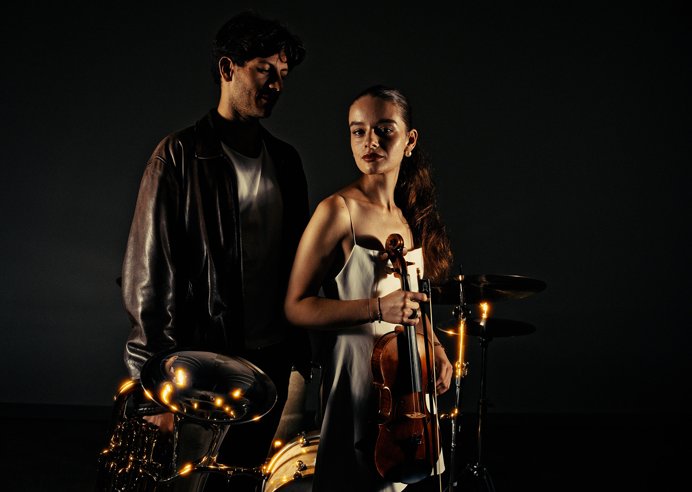

Beethoven mit Beat. Vivaldi mit Bass.
Gershwin mit Gänsehaut.
Studierende der Hochschule Luzern bringen die bekanntesten Melodien der
Musikgeschichte ins KKL, mit Schlagzeug und E-Bass. Erzählt wird
die grösste Liebesgeschichte aller Zeiten: Romeo und Julia. Liebe,
Drama und Herzschmerz, live auf der grossen Bühne.
Dauer 1 Std. 10 Min. ohne Pause
Ort KKL Luzern, Auditorium
Weitere Informationen Einlass jeweils 60 Min. vor Vorstellungsbeginn. Rollstuhl und Begleitplätze online erhältlich.
Violine Julia Roshko
Violine Sára Zastko
Viola Leonardo Vezzadini
Cello Maura Rickenbach
Trompete Pietro Locati
Waldhorn Mauro García Flores
Posaune Giovanni Capelli
Euphonium Raúl Sabiote-Sánchez
Keys Alexandr Dudin
E-Bass Sophia Haas
Schlagzeug Jason Nordemann
Moderator & Gesang Tom Muster
Moderatorin & Gesang Raísa Ierone
Musik, die du kennst. Gänsehaut, mit der du nicht rechnest. Licht aus. Bühne schwarz. Dann: ein einziger Lichtstrahl. Schlagzeug. E-Bass. Trompete. Und noch so viel mehr, das im Dunkeln wartet. Es geht los. Beethoven. Vivaldi. Gershwin. Musik, die du zu kennen glaubst. Doch so hast du sie noch nie gehört. Und plötzlich geht jeder Ton unter die Haut. Musik, Bewegung und Licht erzählen eine Geschichte. Von Liebe und Leidenschaft. Von Glück und Schmerz. Eine Geschichte, die dich mitreisst und dir das Herz bricht: Romeo und Julia. Halte den Atem an. Folge der Musik.
Wir sehen uns am 7. November!